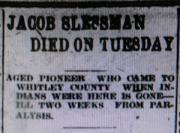

Obituary of Jacob Slessman from the Columbia City (Indiana) Post in 1914
An obituary for Jacob Slessman of Whitley county, Indiana from 1914, that gives crucial information about his immigration from Germany with his widowed mother and 3 brothers in 1840.
Citations
"Jacob Slessman dies on Tuesday", obituary, Columbia City (Whitley, Indiana) Post, 1914 April 8 (Wednesday); microfilmed newspaper, Peabody Public Library, Columbia City, Indiana.
Transcript of Obituary [paragraphs, emphasis and lists added]
(Tuesday's daily)
Jacob Slessman, one of the best known citizens of this city who lived here a life time, and was probably the oldest citizen as a continuous resident of the city, having lived here since the days of Chief Coesse and the Miami Indians, died at 1:15 o'clock Tuesday [7 April] afternoon, after a stroke of paralysis which came upon him two weeks ago.
His death occurred at his home on east Van Buren street, where he resided with his son, Thomas Slessman, and his daughter, Mrs. Addie White, and his aged wife, for the last twenty years or more. He had been in rather feeble health during the last winter, and had not been away from home during the previous fall.
He was born in Baden, Germany, Feb. 5, 1828, and was aged 86 years, on his last birthday.
He was one of four brothers, his last brother, Mathias Slessman, having died about a year ago [1912-1913]. They came across the ocean with their widowed mother in 1840, and located in Seneca county, Ohio, but four years later came to Columbia City in 1844, where the family resided ever since, the deceased being the last of the old family.
He was married after reaching here and residing some years to Lydia Minear, who still survives him at an age of eighty years.
Four children survive, three sons and a daughter:
- Dr. B. F. Slessman, a dentist,
- Thomas Slessman, retired business man,
- Orlando Slessman, all of this city, and
- Mrs. Addie White, also of this city.
Two grandchildren also survive, Miss Lydia White and Fremont White, both of this city, and a great grand child, Thomas White, Jr. a son of the latter.
The aged man was one of the spryest old men the city has ever known, and until recent years he followed farming and truck gardening. He lived to see this city become a city in fact, instead of a mere village on an Indian trail out from Fort Wayne, and was one of the men that was chiefly relied upon in the last few years to make affidavits to land marks of olden times.
He was a genial old gentleman, hale and hearty, until almost his last days, and will be missed by none more than his own children, and the aged wife, who greatly feels the separation from her lifelong companion.
The funeral will be held Friday [10 April] afternoon at the residence on east Van Buren street, occuring [sic] at 2:30 o'clock. It will be conducted by Rev. H. A. Ott of the Grace Lutheran church and the interment will be in the Masonic cemetery.